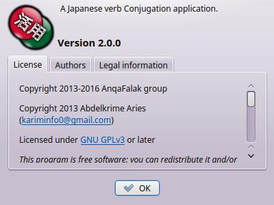
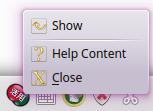

.
There are three formats:
.
There are three formats:
In this application, we want to afford as many features as we can, to help the Japanese language learner conjugating Japanese verbs. These are features afforded in this application's version:
If you want some other features, contact us on our user group mailing list: dzcoding@googlegroups.comIf you want to test a verb's existence, you can just input it in its dictionary form, then conjugate it. If it is found you can see its type and conjugation. Otherwise, you will get a message telling you that the verb doesn't exist.
Remember, the verb must be in the dictionary form (or U-Form). For example, 食べる, 飲む, 行く, 信じる, 死ぬ, 見る, 泳ぐ, 遊ぶ, 出す, 立つ, 合う, etc. Also, you can conjugate nouns which take the verb する as an auxiliary, and form a verb. For example, 勉強する, 選択する, 連絡する, etc. In fact, it is just the conjugation of the verb する. After entering the verb, you can either press ENTER key (on keyboard), or push "Conjugate button".
The conjugation result is grouped into three tables. The classification is based on the complexity of the conjugation, and the use case.
It is used by Japanese learners to remember the conjugation of verbs. If you want to learn verb conjugation as Japanese people do, this is the right choice for you.
Almost the same as "Standard conjugation", but it includes T-Form. This type of conjugation afford the different stems which are combined with other suffixes to get more complex forms. These forms are: Imperfective, Hypothetical, Imperative, Conjunctive, Terminal, and Attributive.
The complex forms are generated from the basic forms followed by suffixes. The complex conjugation follow three axes:
You can save the conjugation content, either by printing it or by exporting it to a file. After conjugation, you can execute these two functions from "File" menu, or from the Tool-bar. You can choose which tables do you want to save in Preferences.
To export conjugation content, select "Content Export" menu, or push the button
.
There are three formats:
To print conjugation content, select "Print" menu, or the button
 .
.
You can control the size of conjugation tables.
You can zoom in from menu "View->Zoom->Zoom in", or by pushing the button

You can zoom out from menu "View->Zoom->Zoom out", or by pushing the button

You can restore normal size from menu "View->Zoom->Normal Size", or by pushing the button

This is where you can control the application's preferences.
You can get "Preferences" dialog box, either from "Edit->Preferences" menu, or by pushing the button
 .
The preferences are divided to two groups: User Interface and Content Export.
.
The preferences are divided to two groups: User Interface and Content Export.
You can choose the application's language. Also, you can choose tables style. When you press the OK button, the language will change immediately.
In this panel, you can control the content that you want to save (export or print). You can choose the exported tables, and if you want them styled or not.
You can find this help by selecting "Help->Help Content" menu, or by pushing the button
 .
.
If you want to get information about JapKatsuyou, you can select "Help->About" menu, or you can push the button
.

You can close the application to tray, by selecting "File->Hide" or by bushing the close button.
If you want to exit the application, you can select "File->Close" menu, or you can push the button
 .
.
If you want to restore the application from tray, left click on tray icon, or right click on it and push the button
 .
.
